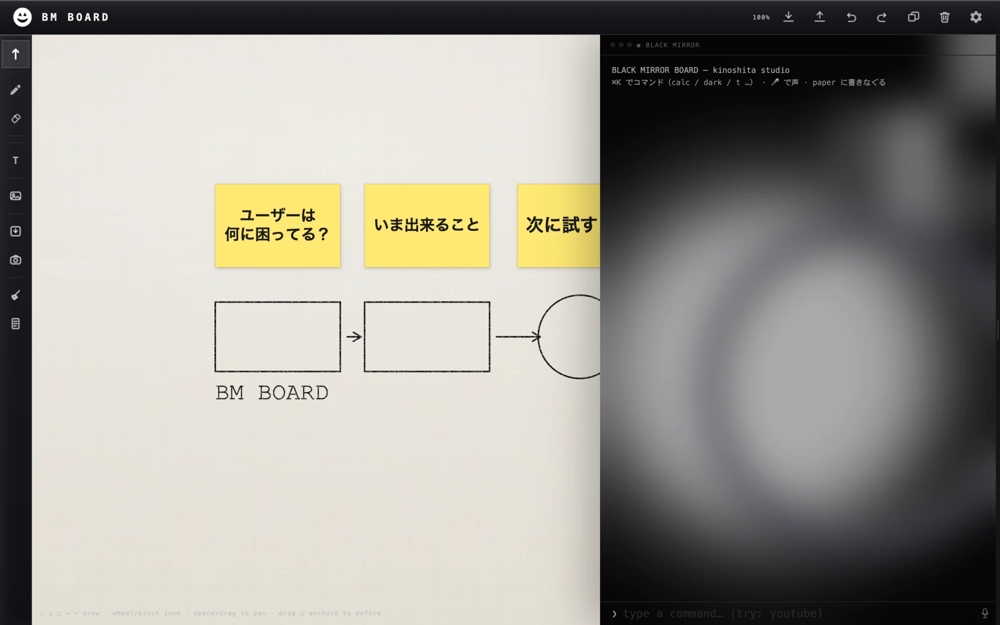

手で書く。キーで動かす。 Write by hand.Move at speed.
ブラウザで開く、一枚の紙。鉛筆の手ざわりと ⌘K の速さが、同じ面にあります。 A sheet of paper that opens in your browser — with the feel of pencil and the speed of ⌘K on the same surface.
紙と鉛筆だけ。Just paper and pencil.
芯が紙の目に引っかかる。消した所には消しカスが残る。裏返せば、表がうっすら透ける。デジタルだからできない、とは言わせない。 The lead catches on the grain. Erasing leaves crumbs behind. Flip the sheet and the front shows through, faintly.
覚えなくていい。Nothing to memorise.
⌘K を押して、やりたいことを打つ。それだけです。呼び名は自分で付けられるので、思いついた言葉がそのまま近道になります。 Press ⌘K and type what you want. Name commands whatever you call them — your words become the shortcut.
機能は、配れる。Features can be shared.
ボードの上でできることに、名前を付けたもの。並べた図をそのまま置き直したり、桜を降らせたり。ファイル1つで人に渡せます。 Give a name to something the board can do — a layout you keep reusing, or petals falling. Hand it to someone as a single file.

描けなくても、描ける。You don't have to draw.
選んで、動かして、つないで、揃える。手をキーボードから離さずに、図解が組み上がります。 Select, move, connect, align. The diagram comes together without your hands leaving the keyboard.

一枚のファイル。One file. That's it.
開いて、書きなぐる。Open it and scribble.
インストールも、ログインも要りません。 Nothing to install. Nothing to sign up for.